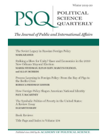
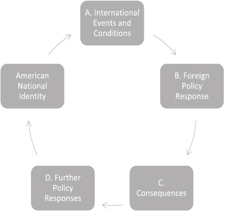
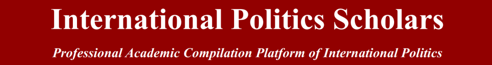
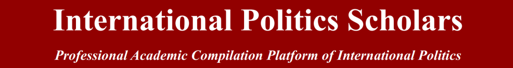

收录于合集

作品简介
【作者】 保罗·麦卡特尼（PAUL T. McCARTNEY）美国陶森大学政治学教授。他出版了《权力与过程:美国的国家认同》、《1898年的战争》、《美帝国主义的崛起》以及许多关于美国外交政策、美国民族主义和相关主题的文章。
【编译】 杨帆（国政学人编译员，外交学院国际关系研究所）
【审校】 晋玉
【排版】 ****李佳霖
【文章来源】 Paul T. McCartney（2019）. How Foreign Policy Shapes American National Identity. Political Science Quarterly (Wiley-Blackwell) , 73(4), 675–709.
期刊介绍

Political Science Quarterly（《政治学季刊》），刊载研究美国和其他国家现代和过去的政府、政治学和公共事务等方面的文章和书评，书评约占三分之一。根据2018年Journal Citation Reports，其影响因子为0.646。
外交政策如何塑造美国的国家认同
How Foreign Policy Shapes American National Identity
内容提要 本文论述了外交政策在美国国家认同中的作用。它评估美国认同的组成部分及接受程度，如通过行动和选择获得自由或平等以及政治如何为它们的实践提供平台。美国人利用外交政策来巩固和澄清现有的社会界限。当美国人的身份围绕着“自由”的构建而演变时，外交政策在塑造自由的意义上却被忽视了。
文章导读
作者认为， 目前对美国国家认同的性质和来源的研究忽视或低估了世界政治对美国国家认同的影响程度，国际事务对美国人的影响比美国人自己认为的要大得多 。本文探讨了外交政策作为美国国家认同来源的运行机制，其主要通过三种方法来实现， 首先 展示自由或平等等美国身份的组成部分是如何被广泛接受的，并通过以自由、平等等名义做出的行动和选择来获得外交政策的意义以及世界政治如何能够提供舞台来执行唤起美国身份的政策； 其次 美国人不断地援引“他者”来构建自己的“自我”意识，同时利用外交政策来巩固和澄清现有的社会边界；再次美国的身份是随着美国最高法院裁决中所定义的“自由”的构建而演变的。在这种背景下，外交政策在塑造美国自由的意义上扮演了一个被忽视的角色。国家政策对于国家认同的变化的影响是持久的，而文中所指美国国家认同，是美国人集体道德愿望的官方表现，通过政治代表人物的言辞和政策表达出来。由此，可以认识到 美国在世界舞台上不断变化的角色 ，即美国 如何产生新的规范 并 对现有概念和社会边界 进行 新 的 建构 ，这些新概念和社会边界共同构成了美国民族的实践和理想身份。本章从以下几个方面入手: 首先， 总结了形成文章论点的第二意象颠倒理论和批判理论的核心观点。 其次 ， 吸取民族主义理论，将国家身份定义为:有争议的、建构的、情感扎根的、政治导向的、由外部边界和内部文化衍生的共同体，并将该模型应用于美国的国家认同。 **第三 ,**它更深入地解释了美国外交政策对国家建设争论的过程以及设定边界的贡献,并利用19世纪扩张主义和19世纪70年代的代表性的政治辩论两个较短的案例研究来进行检验,此外还有巴拿马运河条约以及其他历史的例子。 第四， 本文简要概述了最高法院因外交政策而产生的公民自由案件。美西战争将所有主题内容联系了起来并提供了一个最终的案例研究。
一、颠倒的第二意象与批判理论
作者认为颠倒的第二意象学者提出了令人信服的证据，证明美国政府的正式和非正式结构深受国际考虑的影响，即美国政治的许多制度和监管层面都是由外交事务从根本上塑造的。此外，文章借鉴了批判理论的许多观点，包括认为行为和思想在确定身份时同样重要，但文章并未采纳该领域的两个核心假设。 首先，认为美国人总是被一种压迫他人的欲望所驱使的 这一 观点太过 绝对 。第二，认为压迫和等级制度是建构身份的话语的必要组成部分 的这一 主张 并不普遍适用。
二、国家认同的建构 ********
作者强调国家的四个特点， 这四个属性是相互关联的，在国家认同与外交政策之间的反馈循环中起着重要的作用。 首先， 国家 在有限 边界 内 需要治安 和稳定。 一个国家是一个自我认同的政治共同体，其基础是一套关于其成员自己和他人关系本质的观念，因此所有国家的主要特征是在周围存在边界;这些边界既是概念上的，也是实际存在的，且需要巡查和维护。 其次， 国家是由 有文 化背景的 行为体 建立的 。 概念边界反过来反映了这个国家是如何建立起来的，所有的国家认同都植根于一个民族的文化，并以核心规范为基础，但核心规范仅在最普遍的层面奏效，历史上许多行为体试图捍卫自己的先例和文化习俗以此成为国家的核心代表。 第三， 各国都有自己的政治和领土 目标。 在某种程度上，国家有政治和领土诉求，尽管这种诉求在强度和目标上可能有很大差异，因为所有的国家认同在本质上都是富有争议且不断演变的，民族主义是一种把民族的集体道德愿望转移到国家的方法，它是一种不断变化的过程，它本身就是政治性的。 第四， 国家激发了强烈的情感反应，反映了个人 对 个人身份和国家身份的认同 。 民族主义的情感力量为任何成功利用它的政治计划增添了燃料，因为个人身份在本质上与国家身份紧密相连，特别是对国家认同感极强的人。
除此之外，国际事务也可以对国家的核心价值观和自我理解产生影响，甚至是变革。尤其是战争促使社会的成员产生对彼此负有义务并愿意为了国家的利益而牺牲自己的想法。
三、美国的民族主义 ****
美国国家认同的两种主要叙述都强调了其信仰或种族根源。在美国历史的大部分时期,第一种说法都占有重要的地位，它明确美国对自由与平等的职责(两者之间重点不同)并通过多种方式利用反种族主义、例外论、宗教自由、民主、共和主义、具有美国属性的英国自由主义传统中的一个或多个。这些规范、职责以及对美国国家认同的传承处于核心地位并在建国之初被确立为准则。另一种对待美国民族主义的主要方式将其定义为对白人男性基督教至上的遵循，美国在建国之初就制定了具有支配性的规范性规章制度，至今仍是国家认同的决定性因素。此外，还有“多元传统”理论，它承认了美国民族主义者可以利用的所有先例，以捍卫当代政策立场与美国的传统和价值观相一致。这三种对美国民族主义的解释都是对美国经验的描述，这种描述混合了描述性和规范性的元素。
四、外交政策如何塑造美国国家认同：过程
主要关注三个方面。第一个是外交政策如何引发关于美国身份构成规范的辩论。第二个方面强调了它在边界设置中的作用，这是一个与第一个方面重叠的功能。第三个方面调查了外交政策如何使美国人对个人自由的观念发生了有意义的改变，正如最高法院的裁决所表明的那样，其本身以深远的方式重塑了宪法权利。
 上图展示了政策和身份的相互作用，以及外交政策对美国身份的影响。美国会在A到D方框中进行包括关于美国人身份的辩论，如反对共产主义蔓延到越南。框C是政策选择的后果并将成为评价和争论的来源，并非所有的主要政策周期都包含方框D，代表后续政策，但大多数都包含。 1.争论和澄清 ****对美国人身份的不同看法反映了更广泛的文化和规范分歧 ，主要的外交政策辩论通过暗示对国家与世界的正确关系的不同理解来体现这些分歧。学者们认识到，美国的国家认同决定了它的外交政策偏好，一些学者认为，外交政策偏好的变化与这些政策根源的潜在思想斗争有关，其他则认为美国人拥有值得称赞的认同，但他们的行为却常常与这种认同不一致 。尽管学者们对国家认同与外交政策之间的关系进行了界定，但他们认为，对国家认同的主导解释有时会发生变化，从而导致外交政策的调整，所以作者认为这些学者并没有完成上图所描述的周期，也没有考虑新的外交政策是否同样将身份推向不同的方向。 2.历史实证 首先，作者以1978年美国为签订巴拿马运河条约而进行的国内辩论为例，认为这次辩论通过加强那些在政策辩论中失败的人的声音来影响美国人以自己在世界上的地位来定义自己的方式。其次，作者指出外交政策一方面复制并加强了国内的社会边界，如美国白人的权力和种族主义态度，另一方面促进社会边界的演变，增强了身份认同的等级意识，如冷战初期，美国国内的种族隔离制度。此外，19世纪美国的大陆扩张过程中利用对非白人的文化融合以及非白人既不能融入美国，也不能继承文化并实现自治的困境实行种族制度，推动美国法制的改变；同时进行的摩门教的改革也影响了宪法的制定。再次，自911事件以来，美国人重新审视了在战争和动荡时期出现的一场辩论:如何在安全与自由之间取得恰当的平衡，通过一个个案件的发生重新的对宪法进行了建构与修正。最后是关于美西战争后美国是否要和其他国家一样进行殖民主义的辩论，美西战争使得美国重新把自己定义为一个世界大国并开始进行殖民扩张。
五、结论 ****
作者认为这篇文章注意到我们忽视的国际环境对美国国家认同的影响，这种影响是通过制定应对它们的政策的过程来谈判的。本文强调从民族主义理论中汲取的见解，这些见解在美国民族认同的主流观点中得到了承认，但并未得到深入关注。总而言之，美国的国家认同与建国之初已大不相同，而外交政策促成了这一演变。所以，美国人如何解读和应对他们所面临的环境，不仅影响了政策环境，也影响了国家认同本身。
_ ** _ ** _ ** _
本文由国政学人独家编译推荐，文章观点不代表本平台观点，转载请联系授权。**__ 
